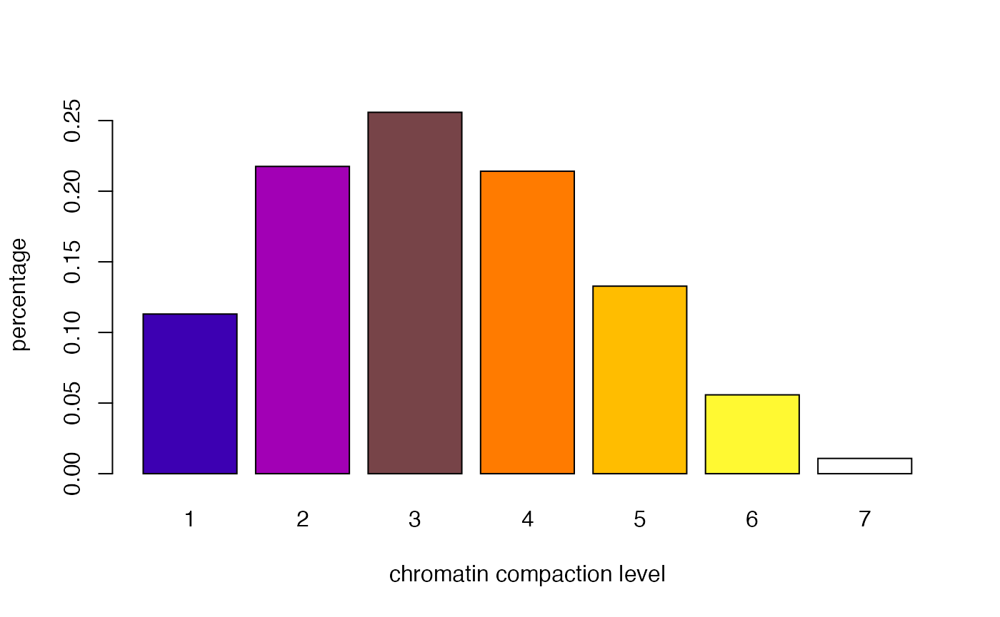
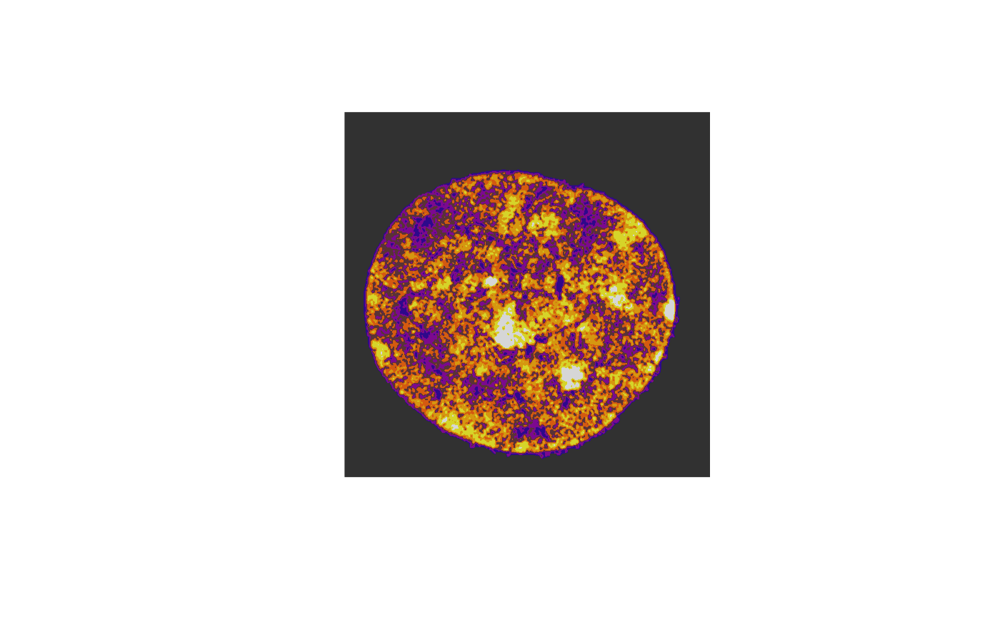
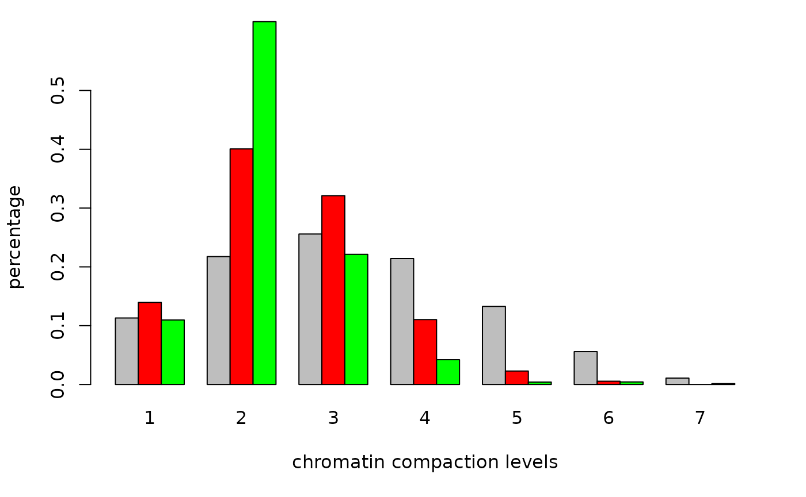
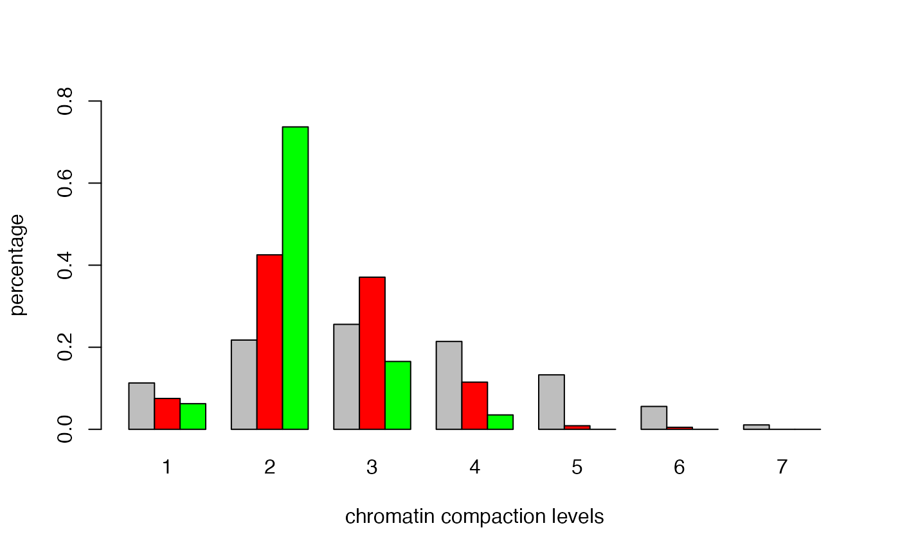

Workflow
Volker Schmid
2020-01-21
workflow.RmdInstallation
Install nucim using install.packages(). The package relies on the EBImage package, which is available on bioconductor, hence you need to set the repositories accordingly:
Start with loading the necessary libraries:
Read image and mask from DAPI
In the following, we use an example dataset available online. Use the readTIF function in bioimagetools to load the RGB image.
img = readTIF("http://ex.volkerschmid.de/cell.tif")
sections = dim(img)[4]
x = y = 0.0395
z = 0.125
blue = img[,,3,] The dapimask function automatically finds the kernel using the DAPI (blue) channel. This takes about 30 seconds (all computation times are using MacBookPro 2019, 2,4 GhZ Quad-Core i5, 16 GB RAM)
Chromatin compaction classification
Next we find compaction classes from the DAPI channel (Computation time around 180 sec.).
classes = classify(blue, mask, 7, beta=0.1, z=x/z)
## 0o0o.xXx.o0o.xXx.o0o.xXx.o0o.xXx.o0o.xXx.o0o.xXx.o0Barplot of classes and heatmap, finally save the classes image.
tab<-table.n(classes, 7, percentage=TRUE)
barplot(tab, ylab="percentage", xlab="chromatin compaction level",col=heatmap7())

Distances of chromatin compaction classes
Find the distances between compaction classes (computation time around 480 seconds, due to parallelization this depends on number of cores). The plotting function defines what we mean by distance: the minimum distance between class voxels, a quantile or plot a boxplot.
classes<-readClassTIF("classes.tif")
distances = nearestClassDistances(classes, voxelsize=c(x,y,z), classes=7, cores=4L)
save(distances,file="distances.Rdata")
plotNearestClassDistances(distances, method="min",ylim=c(0,.1),qu=.01)
plotNearestClassDistances(distances, method="quantile",ylim=c(0,.22),qu=.01)
plotNearestClassDistances(distances, method="boxplot",ylim=c(0,1.5))Map spots to classes
We can compute the distribution of other color channels on compaction classes. Here we use a threshold approach and an intensity-weighted approach for comparison. A test on independence of color channels and compaction classes is automatically done (computation time around 4 sec.).
red = img[,,1,]
green = img[,,2,]
cc1<-colors.in.classes(classes,red,green,mask,7,type="thresh",plot=TRUE,
col1="red",col2="green",thresh1=0.05,thresh2=0.05,
test="Wilcoxon",ylim=c(0,.5),
xlab="chromatin compaction levels",ylab="percentage")
## Wilcoxon rank-sum test DAPI vs. channel 1: p-value < 5e-09
## Wilcoxon rank-sum test DAPI vs. channel 2: p-value < 5e-09
## Wilcoxon rank-sum test channel 1 vs. channel 2: p-value = 0.00021042
cc2<-colors.in.classes(classes,red,green,mask,7,type="intensity",plot=TRUE,
col1="red",col2="green",thresh1=0.05,thresh2=0.05,
test="Wilcoxon",ylim=c(0,.5),
xlab="chromatin compaction levels",ylab="percentage")
## Wilcoxon rank-sum test DAPI vs. channel 1: p-value < 5e-09
## Wilcoxon rank-sum test DAPI vs. channel 2: p-value < 5e-09
## Wilcoxon rank-sum test channel 1 vs. channel 2: p-value = 0.00362231Alternatively, we can find spots first and then use this to find the distribution on compaction classes (computation time spots() around 90 sec.).
system.time({
spots<-spots.combined(red=red,green=green,mask=mask,size=c(x,y,z),
full.voxel=FALSE,thresh.offset=0.05)
})
## 0o0o.xXx.o0o.xXx.o0o.xXx.o0o.xXx.o0o.xXx.o0o.xXx.o0o.xXx.o0o.xXx.o0o.xXx.o0o.xXx.o0o.xXx.o0o.xXx.o0o.xXx.o0o.xXx.o0o.xXx.o0o.xXx.o0o.xXx.o0o.xXx.o0o.xXx.o0o.xXx.o0o.xXx.o0o.xXx.o0o.xXx.o0o.xXx.o0o.xXx.o0o.xXx.o0o.xXx.o0o.xXx.o0o.xXx.o0o.xXx.o0o.xXx.o0o.xXx.o0o.xXx.o0o.xXx.o0o.xXx.o0o.xXx.o0o.xXx.o0o.xXx.o0o.xXx.o0o.xXx.o0o.xXx.o0o.xXx.o0o.xXx.o0o.xXx.o0o.xXx.o0o.xXx.o0o.xXx.o0o.xXx.o0o.xXx.o0o.xXx.o0o.xXx.o0o.xXx.o0o.xXx.o0o.xXx.o0o.xXx.o0o.xXx.o0o.xXx.o0o.xXx.o0o.xXx.o0o.xXx.o0o.xXx.o0o.xXx.o0o.xXx.o0o.xXx.o0o.xXx.0o0o.xXx.o0o.xXx.o0o.xXx.o0o.xXx.o0o.xXx.o0o.xXx.o0o.xXx.o0o.xXx.o0o.xXx.o0o.xXx.o0o.xXx.o0o.xXx.o0o.xXx.o0o.xXx.o0o.xXx.o0o.xXx.o
## User System verstrichen
## 71.495 14.506 86.187cc<-colors.in.classes(classes,spots$red,spots$green,mask,7,type="i",plot=TRUE,
col1="red",col2="green",test="Wilcoxon",ylim=c(0,.8),
xlab="chromatin compaction levels",ylab="percentage")
## Wilcoxon rank-sum test DAPI vs. channel 1: p-value < 5e-09
## Wilcoxon rank-sum test DAPI vs. channel 2: p-value < 5e-09
## Wilcoxon rank-sum test channel 1 vs. channel 2: p-value = 6.801e-05